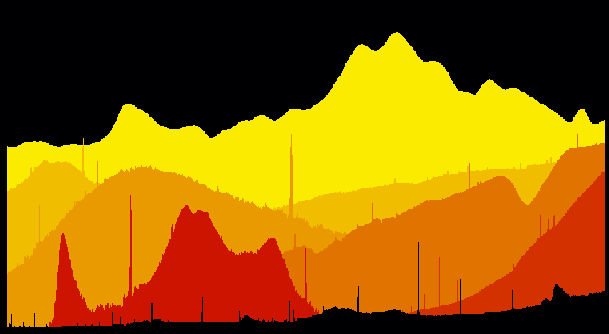
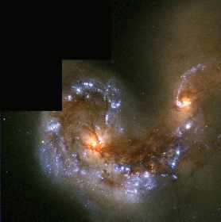
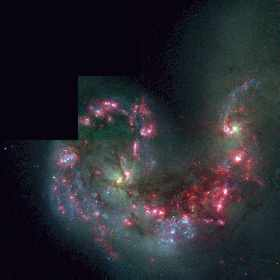
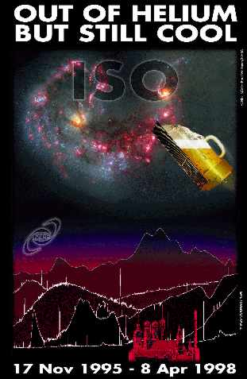
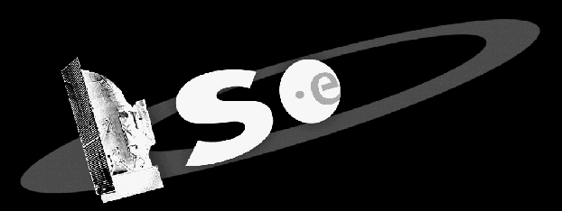

[ home | research
| personal | resume
| links ]
The ISO t-shirt Page
In the first months of 1998 the end of the
ISO mission was imminent.
Engineers predicted the satellite to run out of Helium coolant
sometime between May and August 1998, more than a year later than
expected before launch.
The satellite had already proven to be very successful and deserved
a fitting end-of-mission monument. An ISO t-shirt would be nice, I
thought, and started thinking what picture to put on it and whether
it would sell. The financial risk would be mine.....
The rough idea that developed was that of a Bavarian landscape with ISO
flying overhead, seen against a background of stars and galaxies.
So far OK, but who is going to put all these elements together into
one picture? Jack Waas, an old friend of mine, a professional
graphic designer.
Jack lives in The Netherlands, I live in Bavaria. How would we exchange
graphics and ideas? By mail? No way, this would take ages. So instead we
used the internet. I was to pack elements to be integrated into the
design onto the MPE web, he would put the next draft design on his
personal homepage, for me to view. After some initial problems over
PostScript files the method worked and we made progress.
One element of the Bavarian landscape I wanted to create myself: the
Bavarian mountains! I figured that I could use the plotting
capabilities of IDL to create
the landscape shown below. I created programs with names like
"read_berge.pro", "plot_berge.pro",
"make_mountain.pro" and "make_panorama.pro" to
easily overplot ISO spectra, which serve as mountains here.
In the end, when the programs were ready, it was a lot of fun handling
scientific data in a completely unscientific way!

A legend explaining the panorama can be found here
One of the most inspiring ISO results in my field was the
discovery
of spatially resolved strong emission of Neon
(at 12.8 and 15.6 micrometers) in the region in between the pair of colliding galaxies
NGC4038/39, also called "the Antennae". I therefore chose this pair of galaxies
to feature as the background of the t-shirt print. But instead of taking the
ISO-CAM
image, I decided to use the far more colourful and detailed picture
taken by the Hubble Space Telescope.
The picture most advertised on the web, the one shown below on the
left, is far less spectacular to me than the one shown on the right,
in which the emission of ionized hydrogen (H-alpha) replaces one of
the three basic colours (I guess the red filter). But since a green nucleus
is not very realistic, this image has it's disadvantages too. We
therefore decided to overlay the two images, superimposing the nuclear regions
from the left image on top of the right image and use this for the t-shirt.


If anything, ISO had to be on the t-shirt too. My then-colleague Helmut Feuchtgruber
proposed to modify ISO slightly for the t-shirt, making it look more
similar to a Bavarian bierkrug. Well, Jack used his suggestion and
filled ISO up with Bavarian beer.
(We had no time left to find a brewery to sponsor the t-shirt.)
Since our t-shirt should show where it was designed, i.e. near Munich,
we added some Munich landmarks to the design, but not without adding
the launcher that brought ISO into space, the
Ariane-4, to the skyline.
Credit for the catchy title of the t-shirt goes to Dieter Lutz and
Christoffel Waelkens, who each contributed one line to the final version.

The fairy tale castle Neuschwanstein is somewhere
in the picture. Can you find it?
With the back of the t-shirt finished, the front was next. Our goal
here was to express the elliptical nature of the ISO orbit as well as
the fact that ISO is an
ESA satellite. With only grey tones available, I think we came up
with a not so bad design.

In the end, ISO died a little earlier than hoped for, on april 8 1998.
The t-shirt design was ready for printing just two weeks after that. A
web page was set up featuring the images above, and astronomers around
the world were asked whether they were interested to buy a t-shirt,
for 20 dollars a piece. A few weeks later we had some 120 orders in
from all around the world, which was just enough for me not to loose
any money on the printing of the t-shirts and to go ahead and order
them.
Although I feared the worst, the printers did a very fine job on the
t-shirt. They told me later that they never had gotten a design as
detailed as ours to be printed on t-shirt.....
After the shipping of the 120 t-shirts, I had the feeling that there
would be enough demand for a second volume. So I ordered another 110
shirts (the minimum number that they would print for me), with the
same size (S/M/L/XL/XXL) distribution as for the first volume. This
time though, the demand was different. I had too many XL and XXL
shirts and too few shirts of size M and L. I sold the last XL t-shirt
in 1999, but still get asked whether I have some t-shirts left.
The answer is no: I have only two left to wear myself!